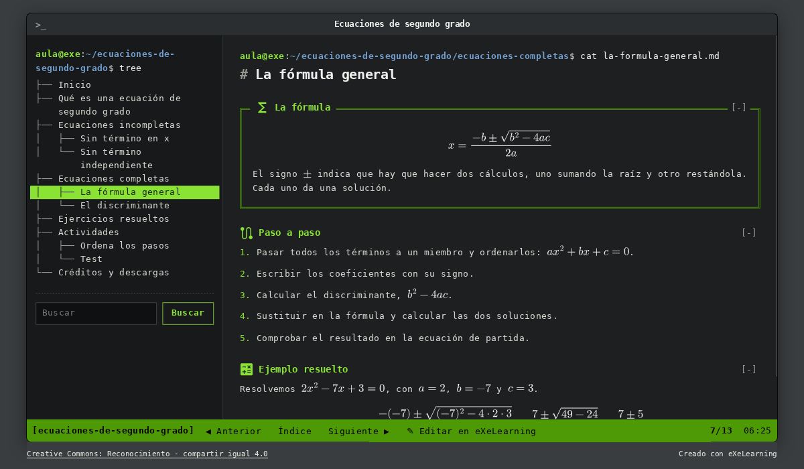
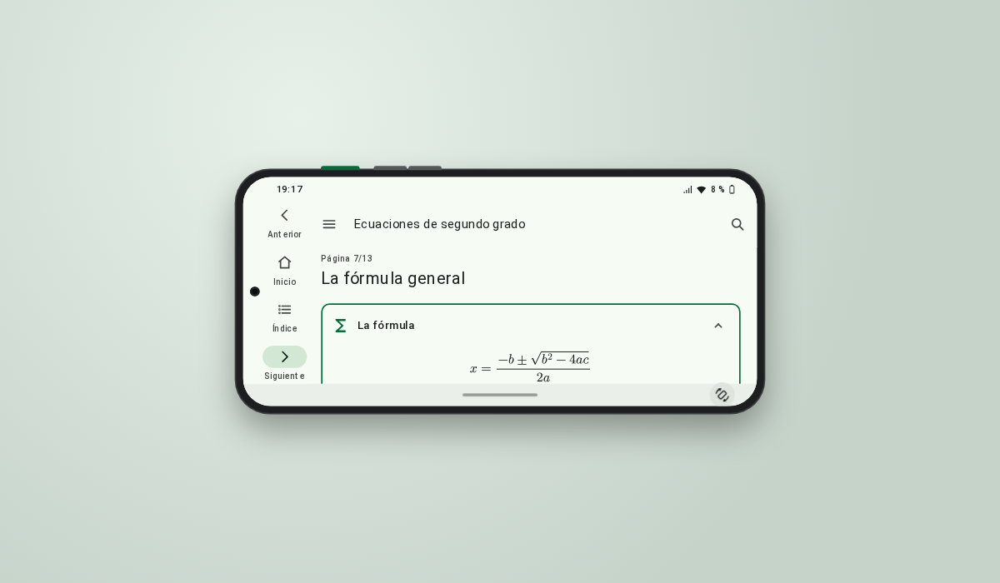

Estilos de eXeLearning
Estilos para eXeLearning 4.0.5 o posterior. Cada uno va con un recurso de ejemplo para verlo funcionando. La forma más sencilla de usarlo es abrir su ejemplo en eXeLearning, que ofrece instalar el estilo.
-

Consola
El recurso como una terminal de Linux: el índice como la orden
tree, el prompt de bash con la ruta de cada página, la barra detmuxy una línea de órdenes que admitels,cd,grepyhelp. Ejemplo: ecuaciones de segundo grado, con las fórmulas en LaTeX. -

Android
El recurso como una aplicación en un móvil Android, con Material Design 3: barra superior, índice en un cajón, tarjetas y barra de navegación. En el ordenador, el móvil se dibuja sobre el escritorio y se gira entre vertical y horizontal; sigue el tema claro u oscuro del sistema. Mismo ejemplo: ecuaciones de segundo grado.